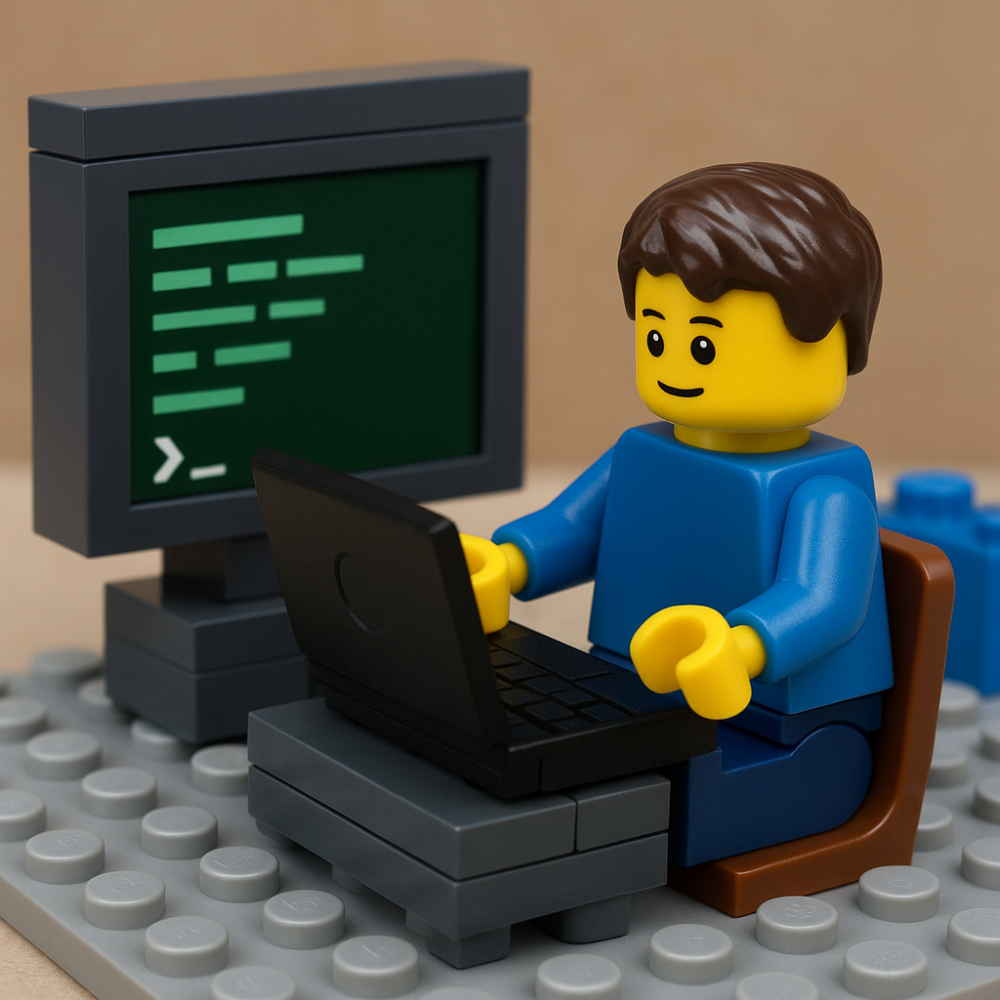

Meus Projetos
← Voltar
Sistema web gerenciador de comércio com banco de dados.

Utilitário de varredura de portas TCP em Python para identificação de serviços ativos em hosts remotos.
Processamento de imagens em python, contagem de assinaturas.